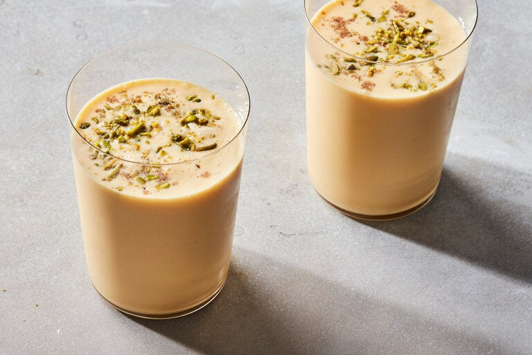

Mango Lassi

Description
Mango Lassi is a sweet and tart lassi flavored with mangoes (whether fresh, pulp, or both). Thanks to Indian restaurants, Mango Lassi has become the most well-known version of lassi around the world.
Ingredients
- Mangoes
- Yoghurt
- Milk
- Sugar
- Sea salt
- Pistachios crushed
- Almonds crushed
- Cardamom powder
- Saffron strands
Steps
- In a blender, blend mango, yogurt, milk, honey and salt until smooth.
- Pour into glasses and top with cardamom powder and nuts and saffron.
- Serve chilled.